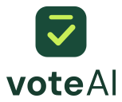
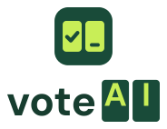
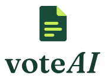

voteAI · três conceitos de logo
Três caminhos para o símbolo e o nome, todos com as cores e as fontes do site. Cada um tem versão horizontal, vertical e só ícone, em cor, monocromático escuro e monocromático claro.
O texto foi convertido em traçado a partir das fontes do projeto (DM Sans e Fraunces), então o desenho é o mesmo em qualquer lugar. Cores chapadas, sem gradiente nem sombra.
1. Urna
O símbolo atual do site, o quadrado verde com o sinal de confirmação, ganha a fenda de uma urna. Muda pouco a marca que já existe e diz "votar" à primeira vista. O nome continua em DM Sans, como no site hoje.

2. Visor
O visor da urna com dois campos de dígito: o primeiro já confirmado, o segundo esperando. É o mesmo momento da simulação nova, em que a urna digita o número um dígito por vez. No nome, A e I aparecem dentro dos campos.


3. Folha
A folha da proposta: as linhas de texto são a ideia e o canto dobrado é onde o nome aparece, como em "primeiro as ideias, depois os nomes". O nome usa Fraunces, a serifa editorial dos títulos do site, com AI em itálico.
